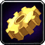
This Dragonflight Engineering leveling guide will show you the fastest and easiest way how to level your Dragonflight Engineering skill up from 1 to 100.Table of contents
Dragonflight Engineering Trainers
- Clinkyclick Shatterboom in Valdrakken.
- Quizla Blastcaps in The Waking Shores.
- Tinkerer Abiru in Ohn'ahran Plains.
- Polky Cogzapper in The Azura Span.
New Dragonflight Engineering features
There are a lot of new stats added to professions in Dragonflight, so here is a quick explanation for some of these.
Recipe Difficulty
Recipe Difficulty shows you how much profession skill is required to make a recipe at the highest quality. You can see your current profession Skill below the Recipe Difficulty stat. Your Skill comes from your base profession skill, specializations, profession equipment, racials, and using high-quality reagents. So, your profession skill can go well above 100.
Item Quality
Every crafted piece of Engineering armor and weapon has 5 different qualities. Engineering Crafted Reagents, Enchantments, and Consumable items have 3 different qualities.
Basically, if you have higher skill, you can make higher-ilvl gear, higher-quality consumables that give more stat, and higher-quality reagents that give more profession skill when used in recipes.
Inspiration, Multicraft, Resourcefulness
- Inspiration: Each time you craft something, there is a chance you get Inspired and craft the recipe with some bonus profession skill, so you can craft an item with higher quality than you could normally.
- Resourcefulness: You have a chance to use fewer reagents.
- Multicraft: You have a chance to craft additional items. (doesn't work on crafted gear, only consumables and reagents)
Dragon Isles Engineering Knowledge
Dragon Isles Engineering Knowledge points are the "talent points" you can put into your profession specialization to learn new skills, stats, and bonuses.
Crafting Orders
Crafting Orders are a new way for players to request a crafter to craft something for them. The interface looks like the Auction House, but instead of players posting Auctions, it will be filled with Crafting Orders you can complete as an Engineer.
Completing crafting orders can give you skill points if you complete orders for items that would normally give you a skill point.
How to Complete Crafting Orders
Clicking on the Crafting Orders tab at the bottom of your profession window will open the Crafting Order UI, where you can browse Crafting Orders posted by other players. You must be near a Crafting Table for your profession to access Crafting Orders.
Engineering Crafting Table location
You can find the Engineering crafting table in Valdrakken on the small platform marked in the picture below.
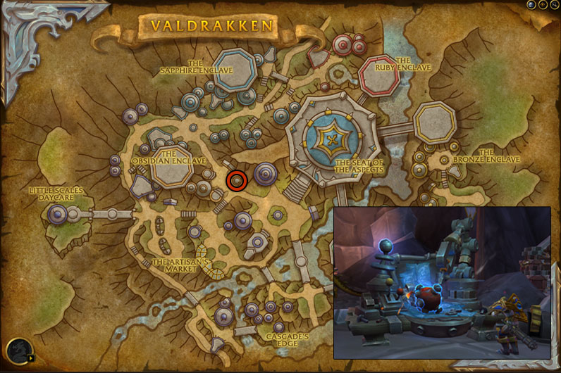
Shopping List
This is the total number of raw materials needed to reach 65. The 65-100 part is not included here because there are too many variables.
The quality doesn't matter for leveling. Buy the cheapest.
- 125x
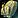
Serevite Ore - 42x Draconium Ore
- 10x Rousing Earth
- 185x Rousing Fire
- 120x Handful of Serevite Bolts
- 115x Shock-Spring Coil
- 2x Greased-Up Gears
Leveling Dragonflight Engineering
Gnome characters have +5 Engineering skill because of their passive Engineering Specialization, and Kul Tiran characters have +2 from the trait 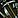
Any extra Engineering skill means recipes stay orange for more points. You can save a lot of gold by doing lower-level recipes for more points.
First Craft Bonus
You will get 1x Dragon Isles Engineering Knowledge talent points each time you craft something for the first time. Dragon Isles Engineering Knowledge is valuable and has a weekly cap from other sources.
So, sometimes you will see that I recommend crafting a recipe that's slightly more expensive to make. This is because I think it's better to get the bonuses while they give you skill points. You will eventually want to get all of them.
1 - 15
25x Handful of Serevite Bolts - 100x Serevite Ore
If you don't have one yet, you can buy an Arclight Spanner and a Gyromatic Micro-Adjustor from Kognir in Valdrakken.
15 - 21
6x Shock-Spring Coil - 10x Rousing Earth, 25x Serevite Ore, 10x Handful of Serevite Bolts
21 - 29
I recommend crafting one from each Profession Equipment to get your "First Craft Bonus".
You can buy Smudged Lens from Kognir in Valdrakken.
1x 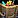 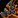
1x Draconium Delver's Helmet - 1x Smudged Lens, 2x Draconium Ore, 2x Handful of Serevite Bolts
1x
1x Lapidary's Draconium Clamps - 3x Draconium Ore, 2x Handful of Serevite Bolts, 1x Greased-Up Gears
Equip the Draconium Encased Samophlange and sell your Arclight Spanner and Gyromatic Micro-Adjustor. You won't need them anymore.
Engineering Specializations
When you hit 25, you will unlock Engineering specializations.
Which Specialization to choose first?
I recommend choosing Function Over Form as your first specialization. (you can learn all 4 as you level up your profession)
You will need 50 skill points to unlock the second specialization, 65 for the third, and 75 for the fourth. 65 is very easy to reach, but it may take a little longer to level to 75.
Where should you put your Dragon Isles Engineering Knowledge talent points?
Put 5 points into Function Over Form then learn the Gear sub-specialization. You will need this talent to discover the recipes used to level between 65-100.
29 - 33
1x 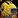 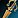
1x
Equip the Draconium Brainwave Amplifier.
33 - 41
4x Bottomless Stonecrust Ore Satchel - 20x Draconium Ore, 8x Handful of Serevite Bolts
41 - 45
5x Tinker Removal Kit - 10x Draconium Ore, 15x Handful of Serevite Bolts, 10x Shock-Spring Coil
45 - 50
Put 5 points into the Function Over Form specialization and learn the Gear sub-specialization. You will need this talent to discover the recipes below. If you spent your points on something else, you can skip this part and start crafting the recipe at the 50-65 part.
Craft 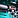 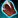
You don't have to reach 50 here. If you discover the cloth or leather bracer recipe on your first craft, go to the next step.
10x P.E.W. x2 10x Rousing Fire, 50x Serevite Ore, 50x Handful of Serevite Bolts, 50x Everburning Blasting Powder
This is just an estimated number. You might have to craft fewer.
50 - 65
35x 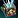
This recipe will be green for the last 8 points, so you might have to make more.
65 - 100
From this point, almost every recipe that gives you skill points requires a Spark of Ingenuity. This crafting reagent Binds on Pickup (BoP), so you can't just buy it from the Auction House.
Below is a step-by-step guide on how to get Spark of Ingenuity for leveling your profession. Step 1 is the most time-consuming, but it's account-wide, and it's something you probably already completed.
Step 1. #Dragonflight campaign quests
To get Spark of Ingenuity, you must complete the Dragonflight main story campaign quests until you unlock World Quests. This is ACCOUNT-WIDE, so you only need to complete these quests with one of your characters. If you open your quest log, you will find these quests at the top in the campaign section under the "Dragonflight" title.
- Complete the Dragonflight campaign quests until you get Renown of the Dragon Isles from Alexstrasza the Life-Binder.
- Talk to Therazal to complete Renown of the Dragon Isles.
Step 2. #Engine of Innovation Questline
Pick up the Learning Ingenuity quest from Therazal. This quest will start the Engine of Innovation Questline that will award you with Spark of Ingenuity.
Talk to Greyzik Cobblefinger to complete Learning Ingenuity and pick up the Jump-Start? Jump-Starting! quest.
If you have already completed the Engine of Innovation Questline with one of your characters, you don't have to do it again. Talk to Greyzik Cobblefinger to skip the quests, and then talk to Maiden of Inspiration to get your 5x Spark of Ingenuity.
Otherwise, you need to complete the entire Engine of Innovation Questline until you get all five Spark of Ingenuity.
Step 3. #Getting more Sparks
To level to 100, you will need another 8x Spark of Ingenuity. Unfortunately, you can't get more than 5 on one character. However, you can use the crafting order system to send crafting orders to your own characters, so you can get more from your alts or by creating trial characters.
Creating a trial character
If you have two level 58 alt characters, you can skip this part and use them instead of creating trials.
- Go to the character selection screen and click "Create New Character" in the bottom left corner.
- On the character creation page, tick the "Class Trial" box in the bottom left corner.
- Choose any class and talents, then create your Character.
- Go to the portal room in Orgrimmar/Stormwind and click on the Valdrakken portal.
Skipping quests to get 5x Sparks
- Talk to Greyzik Cobblefinger about skipping the quests, and then talk to Maiden of Inspiration.
- Talk to the crafting order NPC Clerk Silverpaw in Valdrakken.
- Click on Armor -> Cloth/Leather -> Wrist, then click "Search" and pick Overengineered Sleeve Extenders or the Needlessly Complex Wristguards. If you don't have the bracer recipes, you can use the cloth goggles Lightweight Ocular Lenses. ( Armor -> Cloth -> Head)
- Change Public Order to Personal Order in the top right, then type in your main character name.
- You don't have to fill in materials besides the Spark of Ingenuity in the "Spark" slot. You can fill the rest of the materials with your main.
- Repeat these steps above until you send 8 crafting orders to your main. (so you will need to create two trial characters)
Step 4. #Crafting Engineering Bracers or Goggles
- Log in with your main character, and go to the Engineering crafting table in Valdrakken. (scroll back to the crafting order section above in the guide if you don't know where it is)
- Open your profession window and click the Crafting Orders tab at the bottom.
- Click on the Personal Tab and complete the crafting orders from your alts.
- Use your sparks to craft 5x more bracers.
Total Mats Needed
Below are the total mats needed to craft the recipes 12 times. You only have to craft 12 from one of them.